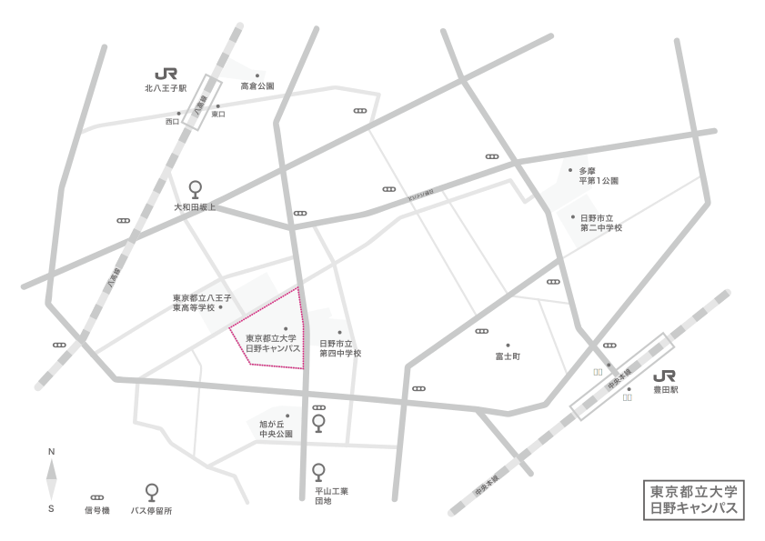

所在地
〒 191-0065 東京都日野市旭が丘6-6
TEL 042-585-8606
6-6 Asahigaoka, Hino-shi, Tokyo, Japan 191-0065
アクセス
JR中央線「豊田」駅（北口）から徒歩約20分。または京王バス「平山工業団地循環」乗車、「旭が丘中央公園」下車徒歩約5分
JR中央線「八王子」駅（北口）、京王線「京王八王子」駅（西口）から京王バス「日野駅行き」または「豊田駅北口行き」乗車、「大和田坂上」下車徒歩約10分
JR八高線「北八王子」駅から徒歩約15分